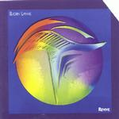

| Artist: | Bjorn Lynne |
| Title: | Revive |
| Label: | Cyclops CYCL 087 |
| Length(s): | 72 minutes |
| Year(s) of release: | 2000 |
| Month of review: | [02/2001] |
| 2) | Bridge To The Universe, Part 1 | 4.37 |
| 3) | Himalayan Summit (hightop) | 7.04 |
| 5) | Moongazer | 6.58 |
| 7) | Niagara | 5.09 |
| 8) | Empty Spaces 2 | 2.42 |
| 9) | Cosmos | 11.01 |
| 10) | Session | 6.23 |
| 11) | Bridge To The Universe, Part 2 | 6.42 |
| 12) | Union City Conspiracy (bonus) | 4.35 |
The first part of Bridge To The Universe is up next. It is a bouncy accessible tune and although the melodies are nice, it is too simple for me and too happy as well. The guitar sound has that seventies "wenj" aspect, often heard in disco in those days.
Himalayan Summit (Hightop) opens percussively. Again a rather modern sounding with some very nice melodies at the end. For the rest the heavy percussive sound reign and the main theme (on guitar) is again very accessible.
Empty Spaces is a piano piece with percussively played piano. A nice interlude between the "violence" of the other tracks. The music has a certain Chinese sound to it.
Back to space music with Moongazer. Catchy electronic rock with quite a bit of electric guitar and many layers of music. The rhythm part kind of goes on and on and does not have that much variation. Focus is on the guitar this time. Nice guitarwork at that.
Space Deliria continues the line of the album in cosmic/spacey way with lots of melodic synths and a strong pouncing rhythm. The guitars are also present again giving power to the music, and making for quite a bit of bombast together with the thematic melodies on the keyboards. Various sound effects such as the echo signal of a sub and such place accents the music.
A question and answer game between bleepy keyboards and spacey guitar we find on Niagara. The sweeping cosmic keyboards that come in between the Caribbean keyboards later are especially nice. Too bad about the much too sunny Caribbean parts. The track ends with Latin percussion in Santana style, before going on the Laid Back (for those who don't happen to know them, they were a one hit wonder in the eighties) tour again. Too bad. We end with the question answer game.
Empty Spaces part 2 like the first part features piano. A good track, with the kind of piano playing that I like.
The long Cosmos does not add much to the pallette of the music: sweeping melodies, often very accessible, many layers of music and of course quite a bit of electric guitar. The percussion is as always rather upbeat. The final part is a bit more languid.
Poppy electronics we here on Session where the guitars play in tandem. The melodies tend to sound very familiar at this point, and I am wondering from where I have heard all these themes before, probably on an earlier track on this record.
The conclusion to Bridge Of The Universe closes the album sec. Blowing winds and such open and the bulk of the track is made up of accessible tunes played in a forthright way.
The bonus track (Compared to which release?) is Union City Conspiracy which has a string like introduction and sounds quite modern and loose, a bit orchestral as well. Floing, melodic, but also rather uneventful.
Nice artwork with very nice colours.